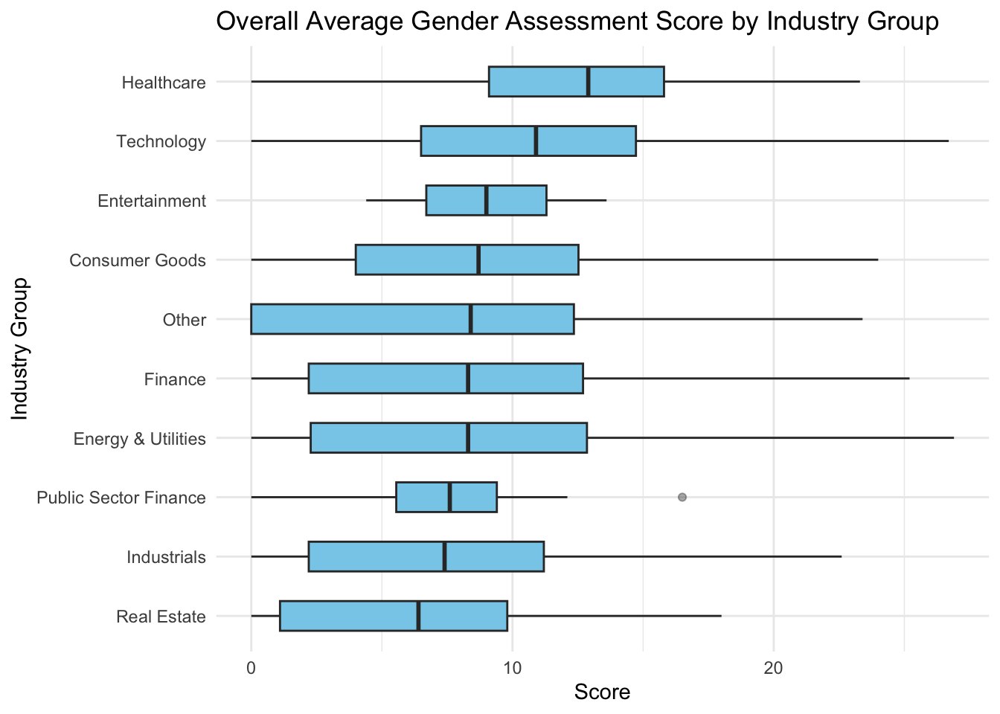
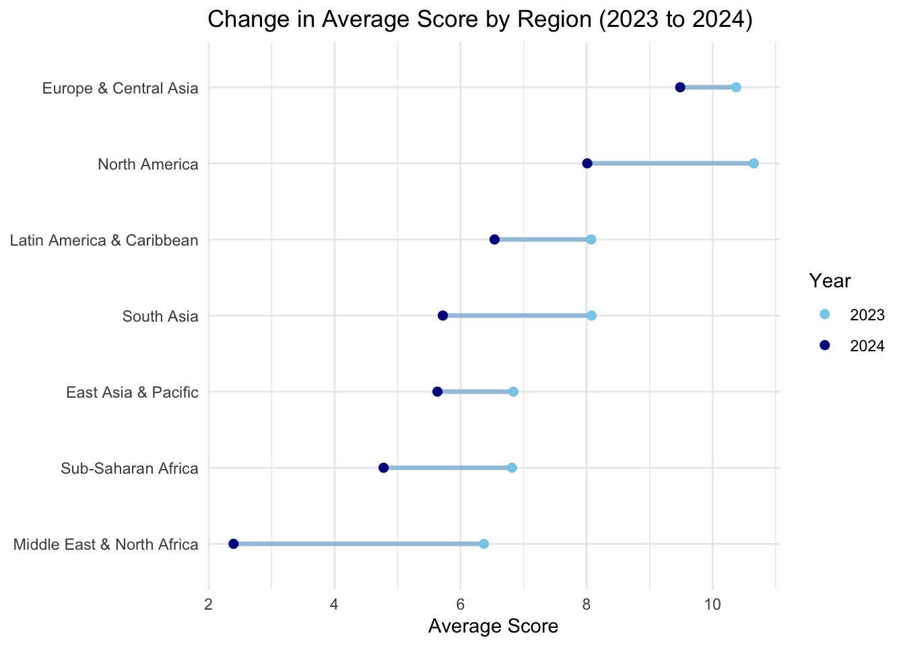
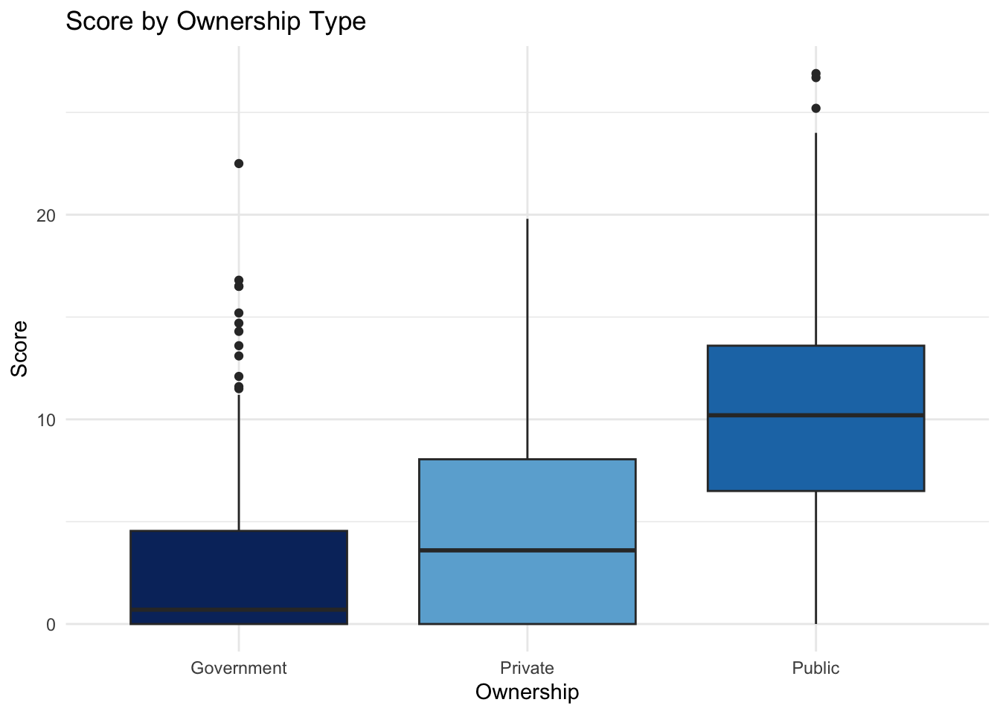

library(diversedata)
library(tidyverse) # includes ggplot2, readr, dplyr
library(janitor) # for data cleaning
library(knitr) # For kable() function
library(car) # For leveneTest()
library(ggthemes) # extra ggplot themes
library(FSA) # For Dunn's testGender Assessment Data
NoteTry it live!
Use Binder to explore and run this dataset and analysis interactively in your browser with R. Ideal for students and instructors to run, modify, and test the analysis in a live JupyterLab environment—no setup needed.
About the Data
The Global Gender Assessment dataset provides insights into how companies across various industries and regions perform on a wide range of gender equity measures. This dataset includes scores on strategic actions, leadership, grievance mechanisms, pay equity, and many other factors related to gender-based practices within corporate environments.
Collected in 2023, the data allows for comparative evaluation across countries, sectors, and ownership types (e.g., Public, Private, Government). Each record represents a company and its corresponding evaluation across 28 detailed gender related indicators, offering a comprehensive snapshot of corporate gender equity worldwide.
The dataset can be used by researchers, policy analysts, and advocacy groups to track progress on corporate gender equity, identify gaps, and support data driven decision making in both public and private sectors.
Download
Metadata
CSV Name
genderassessment.csv
Dataset Characteristics
Multivariate
Subject Area
Equity, Gender, Corporate Governance
Associated Tasks
Comparative Analysis, Score Aggregation, Visualization
Feature Type
Character, Numeric, Factor
Instances
2000 records
Features
30
Has Missing Values?
Yes
Variables
| Variable Name | Role | Type | Description | Units | Missing Values |
|---|---|---|---|---|---|
| company | ID | Character | Name of the company | – | No |
| country | Feature | Character | Country where the company is headquartered | – | No |
| region | Feature | Factor | Geographical region (e.g., “North America”, “Europe & Central Asia”) | – | No |
| industry | Feature | Factor | Industry sector (e.g., “Chemicals”, “Retail”, “Metals & Mining”) | – | Yes |
| ownership | Feature | Factor | Ownership type (e.g., “Public”, “Private”, “Government”) | – | Yes |
| year | Feature | Numeric | Year of assessment | Year | No |
| score | Target | Numeric | Overall gender assessment score (out of 52.3) | – | No |
| percent_score | Target | Numeric | Overall score expressed as a percentage | % | No |
| strategic_action | Feature | Numeric | Score (out of 1) for a public commitment to gender equality and women’s empowerment | – | No |
| gender_targets | Feature | Numeric | Score (out of 2) for target setting on gender equality and women’s empowerment | – | No |
| gender_due_diligence | Feature | Numeric | Score (out of 2) for gender-responsive human rights due diligence process | – | No |
| grievance_mechanisms | Feature | Numeric | Score (out of 3) for availability of grievance mechanisms, along with the collection, analysis, and monitoring of the associated data by sex | – | No |
| stakeholder_engagement | Feature | Numeric | Score (out of 1) for surveys or other engagement mechanisms that specifically address gender equality & women’s empowerment issues | – | No |
| corrective_action | Feature | Numeric | Score (out of 2) for corrective action processes related to gender-related issues | – | No |
| gender_leadership | Feature | Numeric | Score (out of 4) for gender equality in leadership | – | No |
| development_recruitment | Feature | Numeric | Score (out of 2) for availability of recruitment and career development opportunities and collection of the associated data by sex | – | No |
| employee_data_by_sex | Feature | Numeric | Score (out of 4) for availability of employee data by sex | – | No |
| supply_chain_gender_leadership | Feature | Numeric | Score (out of 1) for collection of leadership data in the supply chain by sex | – | No |
| enabling_environment_union_rights | Feature | Numeric | Score (out of 1) for enabling environment for freedom of association and collective bargaining | – | No |
| gender_procurement | Feature | Numeric | Score (out of 2) for of gender-responsive procurement | – | No |
| gender_pay_gap | Feature | Numeric | Score (out of 3) for collection and analysis of gender pay gap data | – | No |
| carer_leave_paid | Feature | Numeric | Score (out of 4) for paid leave policies for caregivers and the monitoring of the associated data | – | No |
| childcare_support | Feature | Numeric | Score (out of 2) for availability of childcare support and family support | – | No |
| flex_work | Feature | Numeric | Score (out of 4) for flexible work options and collection of the associated data by sex | – | No |
| living_wage_supply_chain | Feature | Numeric | Score (out of 2) for enforcement of living wage in supply chain | – | No |
| health_safety | Feature | Numeric | Score (out of 3) for workplace health and safety, including the availability of sex-specific health and safety information to employees | – | No |
| health_safety_supply_chain | Feature | Numeric | Score (out of 2) for the statement and monitoring of supply chain health and safety | – | No |
| violence_prevention | Feature | Numeric | Score (out of 1) for policies and measures to prevent gender-based violence | – | No |
| violence_remediation | Feature | Numeric | Score (out of 2) for mechanisms for remediation after incidents of violence, along with the collection, analysis, and monitoring of the associated data by sex | – | No |
Key Features of the Dataset
Each row represents a single company’s gender assessment in a given year and includes organizational details, overall scores, and performance on various gender-related indicators:
- Organizational details (
company,country,region,industry,ownership,year) – Company name, headquarters location, region, industry sector, ownership structure, and assessment year. - Assessment scores (
score,percent_score) – Overall gender assessment score and percentage for comparison.
Gender Assessment Score Components
The Overall Gender Assessment Score is a weighted composite score derived from six thematic areas, as shown below:
| Theme | Category | Weight (%) | Description |
|---|---|---|---|
| A | Governance and Strategy | 20% | Integration of gender equality in corporate governance and strategic frameworks. |
| B | Representation | 17.5% | Gender balance in leadership, workforce, and management. |
| C | Compensation and Benefits | 17.5% | Pay equity, benefits, and family-friendly policies. |
| D | Health and Well-being | 17.5% | Worker well-being, safe working conditions, and health services. |
| E | Violence and Harassment | 17.5% | Policies and mechanisms to prevent and respond to gender-based violence. |
| F | Marketplace and Community | 10% | Gender-inclusive procurement, community programs, and marketing practices. |
The final overall score is computed out of 35, based on these weighted components, and scaled to percentage (out of 100%) for easier comparison.
Purpose and Use Cases
This dataset supports analysis of:
Gender equity performance across industries, regions, and ownership types.
Temporal trends in corporate gender assessment scores with a focus on changes over time to track progress or setbacks.
The influence of gender-related policies and corporate governance structures by examining how internal practices and ownership models affect outcomes.
The relationship between regulatory environments and gender equity outcomes exploring how regional or national policy contexts align with performance.
Case Study
Objective
Gender equality in the workplace is a critical goal for sustainable and inclusive development. Companies are increasingly being evaluated not only on financial metrics but also on their social and governance performance, including how they support gender equity. This dataset offers a standardized assessment of a sample of companies’ gender-related policies and practices across the world.
To explore these dynamics, we focus on the following key questions:
What is the average Overall Gender Assessment Score by industry, and which industries have the highest and lowest average scores?
Does ownership type affect gender assessment performance?
By analyzing the score variable across industry and ownership categories, and exploring key gender-related indicators, we aim to identify structural patterns and gaps in corporate gender performance.
Analysis
Loading Libraries
import diversedata as dd
import pandas as pd
import altair as alt
import statsmodels.formula.api as smf
from scipy.stats import shapiro, levene, kruskal
import scikit_posthocs as sp
from IPython.display import Markdown1. Data Cleaning & Processing
gender_data <- genderassessment |>
clean_names() |>
drop_na(score) |>
mutate(
industry = as.factor(industry),
ownership_type = as.factor(ownership)
)
kable(head(gender_data))| company | country | region | industry | ownership | year | score | percent_score | strategic_action | gender_targets | gender_due_diligence | grievance_mechanisms | stakeholder_engagement | corrective_action | gender_leadership | development_recruitment | employee_data_by_sex | supply_chain_gender_leadership | enabling_environment_union_rights | gender_procurement | gender_pay_gap | carer_leave_paid | childcare_support | flex_work | living_wage_supply_chain | health_safety | health_safety_supply_chain | violence_prevention | violence_remediation | ownership_type |
|---|---|---|---|---|---|---|---|---|---|---|---|---|---|---|---|---|---|---|---|---|---|---|---|---|---|---|---|---|---|
| 3M | United States | North America | Chemicals | Public | 2023 | 11.3 | 22 | 1 | 0 | 0 | 0 | 0 | 0 | 0 | 0 | 0 | 0 | 1 | 1 | 0 | 0 | 0 | 2 | 0 | 1.0 | 2 | 1.0 | 0 | Public |
| Asos | United Kingdom | Europe & Central Asia | Apparel & Footwear | Public | 2023 | 16.9 | 32 | 1 | 0 | 0 | 2 | 0 | 0 | 3 | 1 | 0 | 0 | 1 | 0 | 0 | 0 | 1 | 1 | 2 | 0.5 | 2 | 0.5 | 0 | Public |
| A.P. Moller - Maersk | Denmark | Europe & Central Asia | Freight & logistics | Public | 2024 | 10.9 | 21 | 1 | 1 | 0 | 2 | 0 | 0 | 0 | 1 | 0 | 0 | 0 | 0 | 0 | 0 | 0 | 0 | 0 | 1.0 | 2 | 1.0 | 0 | Public |
| ABB | Switzerland | Europe & Central Asia | Capital Goods | Public | 2023 | 12.8 | 25 | 1 | 1 | 1 | 2 | 0 | 0 | 0 | 1 | 0 | 0 | 0 | 0 | 0 | 1 | 0 | 0 | 0 | 1.0 | 2 | 1.0 | 0 | Public |
| AbbVie | United States | North America | Pharmaceuticals & Biotechnology | Public | 2023 | 15.4 | 30 | 1 | 0 | 0 | 2 | 0 | 0 | 2 | 1 | 0 | 0 | 0 | 1 | 0 | 0 | 2 | 1 | 0 | 1.0 | 2 | 1.0 | 0 | Public |
| Abercrombie & Fitch | United States | North America | Apparel & Footwear | Public | 2023 | 10.0 | 19 | 0 | 1 | 0 | 2 | 0 | 0 | 1 | 0 | 0 | 0 | 0 | 0 | 0 | 0 | 0 | 1 | 0 | 1.0 | 2 | 1.0 | 0 | Public |
gender_data = dd.load_data("genderassessment").dropna(subset='score')
gender_data['industry'] = pd.Categorical(gender_data['industry'])
gender_data['ownership'] = pd.Categorical(gender_data['ownership'])
Markdown(gender_data.head().to_markdown())| company | country | region | industry | ownership | year | score | percent_score | strategic_action | gender_targets | gender_due_diligence | grievance_mechanisms | stakeholder_engagement | corrective_action | gender_leadership | development_recruitment | employee_data_by_sex | supply_chain_gender_leadership | enabling_environment_union_rights | gender_procurement | gender_pay_gap | carer_leave_paid | childcare_support | flex_work | living_wage_supply_chain | health_safety | health_safety_supply_chain | violence_prevention | violence_remediation | |
|---|---|---|---|---|---|---|---|---|---|---|---|---|---|---|---|---|---|---|---|---|---|---|---|---|---|---|---|---|---|
| 0 | 3M | United States | North America | Chemicals | Public | 2023 | 11.3 | 22 | 1 | 0 | 0 | 0 | 0 | 0 | 0 | 0 | 0 | 0 | 1 | 1 | 0 | 0 | 0 | 2 | 0 | 1 | 2 | 1 | 0 |
| 1 | Asos | United Kingdom | Europe & Central Asia | Apparel & Footwear | Public | 2023 | 16.9 | 32 | 1 | 0 | 0 | 2 | 0 | 0 | 3 | 1 | 0 | 0 | 1 | 0 | 0 | 0 | 1 | 1 | 2 | 0.5 | 2 | 0.5 | 0 |
| 2 | A.P. Moller - Maersk | Denmark | Europe & Central Asia | Freight & logistics | Public | 2024 | 10.9 | 21 | 1 | 1 | 0 | 2 | 0 | 0 | 0 | 1 | 0 | 0 | 0 | 0 | 0 | 0 | 0 | 0 | 0 | 1 | 2 | 1 | 0 |
| 3 | ABB | Switzerland | Europe & Central Asia | Capital Goods | Public | 2023 | 12.8 | 25 | 1 | 1 | 1 | 2 | 0 | 0 | 0 | 1 | 0 | 0 | 0 | 0 | 0 | 1 | 0 | 0 | 0 | 1 | 2 | 1 | 0 |
| 4 | AbbVie | United States | North America | Pharmaceuticals & Biotechnology | Public | 2023 | 15.4 | 30 | 1 | 0 | 0 | 2 | 0 | 0 | 2 | 1 | 0 | 0 | 0 | 1 | 0 | 0 | 2 | 1 | 0 | 1 | 2 | 1 | 0 |
2. Exploratory Data Analysis
Average Overall Assessment Score by Industry
industry_stats <- gender_data |>
group_by(industry) |>
summarise(
avg_score = mean(score, na.rm = TRUE),
median_score = median(score, na.rm = TRUE),
sd_score = sd(score, na.rm = TRUE),
n = n()
) |>
arrange(desc(avg_score))
kable(industry_stats, digits = 2, caption = "Average Score by Industry")| industry | avg_score | median_score | sd_score | n |
|---|---|---|---|---|
| Personal & Household Products | 14.69 | 15.60 | 4.64 | 20 |
| Electronics | 12.63 | 13.30 | 5.44 | 55 |
| Pharmaceuticals & Biotechnology | 12.37 | 12.90 | 5.80 | 29 |
| Apparel & Footwear | 11.49 | 10.80 | 5.98 | 68 |
| Banks | 10.73 | 11.20 | 5.80 | 150 |
| IT Software & Services | 10.24 | 10.25 | 5.85 | 34 |
| Retail | 9.71 | 10.45 | 6.40 | 18 |
| Insurance | 9.60 | 10.20 | 5.26 | 71 |
| Motor Vehicles & Parts | 9.54 | 10.70 | 6.23 | 45 |
| Oil & Gas | 9.50 | 10.30 | 5.93 | 97 |
| Capital Goods | 9.38 | 9.80 | 5.99 | 25 |
| Chemicals | 9.23 | 9.80 | 4.71 | 70 |
| Telecommunications | 9.09 | 10.00 | 5.70 | 83 |
| Entertainment | 9.00 | 9.00 | 6.51 | 2 |
| Payments | 9.00 | 9.00 | 9.62 | 2 |
| Food Retailers | 8.93 | 9.10 | 5.39 | 76 |
| NA | 8.28 | 8.40 | 9.58 | 5 |
| Containers & Packaging | 7.53 | 8.00 | 4.59 | 23 |
| Traditional Asset Managers | 7.51 | 8.20 | 5.32 | 63 |
| Food Production | 7.50 | 7.10 | 5.53 | 206 |
| Development Finance Institutions | 7.43 | 7.60 | 4.33 | 15 |
| Utilities | 6.95 | 7.30 | 5.64 | 125 |
| Conglomerates | 6.94 | 7.75 | 6.33 | 18 |
| Postal & Courier Activities | 6.94 | 6.90 | 3.35 | 21 |
| Metals & Mining | 6.86 | 7.35 | 5.62 | 114 |
| Construction Materials & Supplies | 6.81 | 6.90 | 5.33 | 46 |
| Paper & Forest Products | 6.66 | 6.20 | 4.04 | 29 |
| Freight & logistics | 6.60 | 6.50 | 3.91 | 33 |
| Waste Management | 6.51 | 7.25 | 5.70 | 18 |
| Real Estate | 6.38 | 6.00 | 5.16 | 147 |
| Investment Consultants | 6.38 | 5.80 | 6.22 | 5 |
| Construction & Engineering | 5.64 | 5.35 | 5.07 | 56 |
| Passenger Transport | 4.89 | 2.90 | 5.21 | 101 |
| Agricultural Products | 4.24 | 4.25 | 3.60 | 32 |
| Alternative Asset Managers | 3.63 | 2.90 | 3.84 | 21 |
| Sovereign Wealth Funds | 3.18 | 0.50 | 4.80 | 19 |
| Pension Funds | 2.97 | 1.30 | 3.62 | 58 |
industry_stats = gender_data.groupby(by="industry", observed=False)["score"].agg(
["mean", "median", "std", "count"]
)
industry_stats.columns = ["avg_score", "median_score", "sd_score", "n"]
industry_stats = industry_stats.round(2).sort_values(by=["avg_score"])
Markdown(industry_stats.to_markdown())| industry | avg_score | median_score | sd_score | n |
|---|---|---|---|---|
| Pension Funds | 2.97 | 1.3 | 3.62 | 58 |
| Sovereign Wealth Funds | 3.18 | 0.5 | 4.8 | 19 |
| Alternative Asset Managers | 3.63 | 2.9 | 3.84 | 21 |
| Agricultural Products | 4.24 | 4.25 | 3.6 | 32 |
| Passenger Transport | 4.89 | 2.9 | 5.21 | 101 |
| Construction & Engineering | 5.64 | 5.35 | 5.07 | 56 |
| Real Estate | 6.38 | 6 | 5.16 | 147 |
| Investment Consultants | 6.38 | 5.8 | 6.22 | 5 |
| Waste Management | 6.51 | 7.25 | 5.7 | 18 |
| Freight & logistics | 6.6 | 6.5 | 3.91 | 33 |
| Paper & Forest Products | 6.66 | 6.2 | 4.04 | 29 |
| Construction Materials & Supplies | 6.81 | 6.9 | 5.33 | 46 |
| Metals & Mining | 6.86 | 7.35 | 5.62 | 114 |
| Postal & Courier Activities | 6.94 | 6.9 | 3.35 | 21 |
| Conglomerates | 6.94 | 7.75 | 6.33 | 18 |
| Utilities | 6.95 | 7.3 | 5.64 | 125 |
| Development Finance Institutions | 7.43 | 7.6 | 4.33 | 15 |
| Food Production | 7.5 | 7.1 | 5.53 | 206 |
| Traditional Asset Managers | 7.51 | 8.2 | 5.32 | 63 |
| Containers & Packaging | 7.53 | 8 | 4.59 | 23 |
| Food Retailers | 8.93 | 9.1 | 5.39 | 76 |
| Payments | 9 | 9 | 9.62 | 2 |
| Entertainment | 9 | 9 | 6.51 | 2 |
| Telecommunications | 9.09 | 10 | 5.7 | 83 |
| Chemicals | 9.23 | 9.8 | 4.71 | 70 |
| Capital Goods | 9.38 | 9.8 | 5.99 | 25 |
| Oil & Gas | 9.5 | 10.3 | 5.93 | 97 |
| Motor Vehicles & Parts | 9.54 | 10.7 | 6.23 | 45 |
| Insurance | 9.6 | 10.2 | 5.26 | 71 |
| Retail | 9.71 | 10.45 | 6.4 | 18 |
| IT Software & Services | 10.24 | 10.25 | 5.85 | 34 |
| Banks | 10.73 | 11.2 | 5.8 | 150 |
| Apparel & Footwear | 11.49 | 10.8 | 5.98 | 68 |
| Pharmaceuticals & Biotechnology | 12.37 | 12.9 | 5.8 | 29 |
| Electronics | 12.63 | 13.3 | 5.44 | 55 |
| Personal & Household Products | 14.69 | 15.6 | 4.64 | 20 |
Visualization: Average Overall Gender Assessment by Industry Group
gender_data_grouped <- gender_data |>
mutate(industry_group = case_when(
industry %in% c("Apparel & Footwear", "Food Production", "Food Retailers",
"Retail", "Personal & Household Products", "Agricultural Products") ~ "Consumer Goods",
industry %in% c("Banks", "Insurance", "Pension Funds", "Sovereign Wealth Funds",
"Alternative Asset Managers", "Traditional Asset Managers",
"Investment Consultants", "Payments") ~ "Finance",
industry %in% c("Pharmaceuticals & Biotechnology") ~ "Healthcare",
industry %in% c("IT Software & Services", "Telecommunications", "Electronics") ~ "Technology",
industry %in% c("Oil & Gas", "Utilities") ~ "Energy & Utilities",
industry %in% c("Chemicals", "Capital Goods", "Freight & logistics",
"Passenger Transport", "Metals & Mining", "Containers & Packaging",
"Motor Vehicles & Parts", "Postal & Courier Activities",
"Waste Management", "Paper & Forest Products") ~ "Industrials",
industry %in% c("Construction & Engineering", "Construction Materials & Supplies", "Real Estate") ~ "Real Estate",
industry %in% c("Development Finance Institutions") ~ "Public Sector Finance",
industry %in% c("Entertainment") ~ "Entertainment",
TRUE ~ "Other"
))
gender_by_group <- ggplot(gender_data_grouped, aes(x = reorder(industry_group, score, FUN = median), y = score)) +
geom_boxplot(width = 0.5, fill = "skyblue", outlier.alpha = 0.4) + # width < 1 reduces box width
coord_flip() +
labs(
title = "Overall Average Gender Assessment Score by Industry Group",
x = "Industry Group", y = "Score"
) +
theme_minimal()
gender_by_group
Show grouping code
gender_data_grouped = gender_data.copy()
industry_group_mapping = {
"Apparel & Footwear": "Consumer Goods",
"Food Production": "Consumer Goods",
"Food Retailers": "Consumer Goods",
"Retail": "Consumer Goods",
"Personal & Household Products": "Consumer Goods",
"Agricultural Products": "Consumer Goods",
"Banks": "Finance",
"Insurance": "Finance",
"Pension Funds": "Finance",
"Sovereign Wealth Funds": "Finance",
"Alternative Asset Managers": "Finance",
"Traditional Asset Managers": "Finance",
"Investment Consultants": "Finance",
"Payments": "Finance",
"Pharmaceuticals & Biotechnology": "Healthcare",
"IT Software & Services": "Technology",
"Telecommunications": "Technology",
"Electronics": "Technology",
"Oil & Gas": "Energy & Utilities",
"Utilities": "Energy & Utilities",
"Chemicals": "Industrials",
"Capital Goods": "Industrials",
"Freight & logistics": "Industrials",
"Passenger Transport": "Industrials",
"Metals & Mining": "Industrials",
"Containers & Packaging": "Industrials",
"Motor Vehicles & Parts": "Industrials",
"Postal & Courier Activities": "Industrials",
"Waste Management": "Industrials",
"Paper & Forest Products": "Industrials",
"Construction & Engineering": "Real Estate",
"Construction Materials & Supplies": "Real Estate",
"Real Estate": "Real Estate",
"Development Finance Institutions": "Public Sector Finance",
"Entertainment": "Entertainment"
}
# apply groupings
gender_data_grouped["industry_group"] = (
gender_data_grouped["industry"].map(industry_group_mapping).fillna("Other")
)industry_group_order_by_median = (
gender_data_grouped.groupby(by="industry_group", observed=False, as_index=False)["score"]
.median()
.sort_values(by="score", ascending=False)["industry_group"]
.to_list()
)
alt.Chart(gender_data_grouped).mark_boxplot(size=20).encode(
x=alt.X("score").title("Score"),
y=alt.Y("industry_group").sort(industry_group_order_by_median).title("Industry Group"),
).properties(
title="Overall Average Gender Assessment Score by Industry Group",
width=600,
height=400,
)Comparison of Average Overall Gender Assessment Scores Between 2023 vs 2024 by Region
region_wide <- gender_data |>
filter(year %in% c(2023, 2024)) |> # Ensure only these years are included
group_by(region, year) |>
summarise(avg_score = mean(score, na.rm = TRUE)) |>
pivot_wider(
names_from = year,
values_from = avg_score,
names_prefix = "" # Removes automatic "year" prefix
) |>
ungroup()
ggplot(region_wide, aes(y = reorder(region, `2024`))) +
geom_segment(aes(x = `2023`, xend = `2024`),
linewidth = 1.2, # thinner connecting line
colour = "#a3c4dc", # light blue line
) +
# Plot points for 2023 and 2024
geom_point(aes(x = `2023`, color = "2023"), size = 2) +
geom_point(aes(x = `2024`, color = "2024"), size = 2) +
scale_color_manual(
name = "Year",
values = c("2023" = "#87CEEB", "2024" = "#00008B")
) +
labs(
title = "Change in Average Score by Region (2023 to 2024)",
x = "Average Score", y = "Region"
) +
theme_minimal() +
theme(axis.title.y = element_blank())
region_wide = (
gender_data.loc[gender_data["year"].isin([2023, 2024])]
.groupby(["region", "year"], as_index=False)["score"]
.mean()
.rename(columns={"score": "avg_score"})
)
region_order = (
region_wide[region_wide["year"] == 2024]
.sort_values(by="avg_score", ascending=False)["region"]
.to_list()
)
lines = alt.Chart(region_wide).mark_line(size=3, opacity=0.4).encode(
x=alt.X("avg_score"),
y=alt.Y("region").sort(region_order),
detail=alt.Detail("region"),
)
points = alt.Chart(region_wide).mark_circle(opacity=1, size=30).encode(
x=alt.X("avg_score").title("Average Score"),
y=alt.Y("region").sort(region_order).title(None),
color=alt.Color("year:N").title("Year")
)
(lines + points).properties(
width=400, height=300, title="Change in Average Score by Region (2023 to 2024)"
)3. Gender Assessment Score by Ownership Type
In addition to industry-based analysis, we examine whether ownership structure affects the overall gender performance scores. The following box plot illustrates how scores vary by ownership category
filtered_data <- gender_data |>
subset(!is.na(score) & !is.na(ownership))
ggplot(filtered_data, aes(x = ownership, y = score, fill = ownership)) +
geom_boxplot() +
scale_fill_manual(values = c(
"Public" = "#1f77b4", # blue
"Private" = "#6baed6", # lighter blue
"Government" = "#08306b" # dark blue
)) +
labs(title = "Score by Ownership Type", x = "Ownership", y = "Score") +
theme_minimal() +
theme(legend.position = "none")
filtered_data = gender_data.dropna(subset=['score', 'ownership'])
alt.Chart(filtered_data).mark_boxplot(size=80).encode(
x=alt.X('ownership').title('Ownership').axis(alt.Axis(labelAngle=0)),
y=alt.Y('score').title('Score'),
color=alt.Color('ownership', legend=None)
).properties(width=450, height=350, title="Score by Ownership Type")Hypothesis Testing: Gender Assessment Scores by Ownership Type
We aim to test whether companies with different ownership types have significantly different mean gender assessment scores.
Hypotheses
Null Hypothesis (H₀):
The mean score is the same across all ownership groups.
\[ \mu_{\text{public}} = \mu_{\text{Private}} = \mu_{\text{Government}} \]Alternative Hypothesis (Hₐ):
Not all group means are equal.
Assumption checks for ANOVA
Before applying ANOVA to compare gender assessment scores across ownership types, it is essential to verify that the assumptions underlying the test are met.
1. Independence of Observations
- Observations within and across groups must be independent: This assumption is generally satisfied by the dataset design, provided that each company appears only once and that there is no clustering of related firms or repeated measurements. Since our dataset includes one record per company without repeated measurements, we consider the independence assumption to be reasonably met.
2. Normality of Residuals
ANOVA assumes that the residuals are normally distributed. We assess this using the Shapiro-Wilk test:
anova_model <- aov(score ~ ownership, data = gender_data)
shapiro.test(residuals(anova_model))
Shapiro-Wilk normality test
data: residuals(anova_model)
W = 0.98844, p-value = 1.423e-11anova_model = smf.ols(
"score ~ C(ownership)", # C() specifies a categorical variable
data=gender_data
).fit()
residuals = anova_model.resid
shapiro_test_stat, shapiro_p_value = shapiro(residuals)
print(f"W = {shapiro_test_stat:.4f}, p-value = {shapiro_p_value:.4e}")W = 0.9884, p-value = 1.4227e-11Inference
Since the p-value is less than 0.05, we reject the null hypothesis of normality. The residuals are not normally distributed, violating the normality assumption for ANOVA.
3. Homogeneity of Variances
Another key assumption is that the variance of scores is roughly equal across the ownership types. We use Levene’s Test to assess this:
leveneTest(score ~ ownership, data = gender_data)Warning in leveneTest.default(y = y, group = group, ...): group coerced to
factor.Levene's Test for Homogeneity of Variance (center = median)
Df F value Pr(>F)
group 2 25.558 1.097e-11 ***
1993
---
Signif. codes: 0 '***' 0.001 '**' 0.01 '*' 0.05 '.' 0.1 ' ' 1# create a list of scores per ownership and convert that series of lists into a lists of lists
groups = gender_data.groupby('ownership', observed=False)['score'].apply(list).to_list()
# perform Levene's test (* unpacks a list)
levene_test_stat, levene_p_value = levene(*groups)
print(f"F = {levene_test_stat:.4f}, p-value = {levene_p_value:.4e}")F = 25.5580, p-value = 1.0972e-11Inference: As the p-value is well below 0.05, we reject the null hypothesis of equal variances. The assumption of homogeneity of variance is violated.
Since both the normality of residuals and homogeneity of variance assumptions are violated, a non-parametric alternative to ANOVA is more appropriate.
4. Kruskal-Wallis test
To evaluate whether the score differs across different types of business ownership, we use the Kruskal–Wallis test.
Hypotheses
Null Hypothesis (H₀):
The median score is the same across all ownership groups.
\[ \tilde{\mu}_{\text{public}} = \tilde{\mu}_{\text{Private}} = \tilde{\mu}_{\text{Government}} \]Alternative Hypothesis (Hₐ):
Not all group medians are equal.
Assumptions of the Kruskal-Wallis Test
Ordinal or Continuous Dependent Variable: The variable
scoreis numeric, satisfying this assumption.Independent Groups: Each
business(or observation) belongs to only one ownership type. This ensures group independence.Independent Observations: Each row in the dataset represents a unique business entity, so the observations are independent.
kruskal.test(score ~ ownership, data = gender_data)
Kruskal-Wallis rank sum test
data: score by ownership
Kruskal-Wallis chi-squared = 517.7, df = 2, p-value < 2.2e-16kruskal_test_stat, kruskal_p_value = kruskal(*groups)
print(
f"Kruskal-Wallis chi-squared = {kruskal_test_stat:.4f}, p-value = {kruskal_p_value:.4e}"
)Kruskal-Wallis chi-squared = 517.7035, p-value = 3.8204e-113- The p-value is small (< 0.05), meaning we reject the null hypothesis (H₀) that all ownership groups have the same median score.
- There are statistically significant differences in median
scorebetween at least two ownership types.
Since the test indicates that not all ownership groups are equal, we need to conduct a post-hoc test to identify which specific groups differ.
5. Dunn’s Post-Hoc Test (with Bonferroni Correction)
To determine which ownership groups differ, we conduct Dunn’s test with Bonferroni adjustment for multiple comparisons.
# Run Dunn's test with Bonferroni correction
dunnTest(score ~ ownership, data = gender_data, method = "bonferroni")Warning: ownership was coerced to a factor.Warning: Some rows deleted from 'x' and 'g' because missing data. Kruskal-Wallis rank sum test
data: x and g
Kruskal-Wallis chi-squared = 517.7035, df = 2, p-value = 0
Dunn's Pairwise Comparison of x by g
(Bonferroni)
Col Mean-│
Row Mean │ Governme Private
─────────┼──────────────────────
Private │ -4.232728
│ 0.0001*
│
Public │ -18.86741 -16.05231
│ 0.0000* 0.0000*
FWER = 0.05
Reject Ho if adjusted p ≤ FWER, where (unadjusted) p = Pr(|Z| ≥ |z|)
Dunn (1964) Kruskal-Wallis multiple comparison
p-values adjusted with the Bonferroni method. Comparison Z P.unadj P.adj
1 Government - Private -4.232728 2.308732e-05 6.926197e-05
2 Government - Public -18.867414 2.113945e-79 6.341836e-79
3 Private - Public -16.052311 5.507422e-58 1.652227e-57gender_data = gender_data.dropna(subset="ownership")
adjusted_p_values = sp.posthoc_dunn(
gender_data, val_col="score", group_col="ownership", p_adjust="bonferroni"
)
Markdown(adjusted_p_values.to_markdown())| Government | Private | Public | |
|---|---|---|---|
| Government | 1 | 6.9262e-05 | 6.34184e-79 |
| Private | 6.9262e-05 | 1 | 1.65223e-57 |
| Public | 6.34184e-79 | 1.65223e-57 | 1 |
Inference
Pairwise comparisons using Dunn’s test (with Bonferroni correction) indicate statistically significant differences in gender assessment scores across all ownership types:
Government-owned companies have significantly lower scores than both Private and Public companies.
Private companies also score significantly lower than Public companies.
Discussion
This analysis highlights notable disparities in gender assessment performance across industries, ownership types, and regions. Industries demonstrated varying levels of success with gender equity, with the Personal & Household Products sector achieving the highest average scores. In contrast, the Pension Funds industry consistently lagged behind, pointing to potential structural or cultural barriers that may impede progress in specific sectors.
Ownership structure played a critical role in performance. Government-owned companies significantly outperformed both privately held and publicly traded firms. In contrast, publicly traded companies, despite their visibility and access to resources, showed relatively poor performance.
Despite the insights provided, this analysis faces some limitations. While average scores are useful for summarizing overall trends, they can hide meaningful differences within subgroup like firm size or revenue.
Attribution
Data sourced from World Benchmarking Alliance, available under a Creative Commons Attribution 4.0 International License. Original dataset: 2024 Gender Assessment data set.